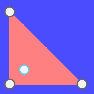

John and Ada are sitting on the grass above a small hill. It is midnight and the sky is full of stars. The sky looks like a 2D plane from so far away and the stars look like points on that plane. Ada loves blue stars and suddenly she notices one, while all the other stars in the sky are white. She loves the blue star so much that she wants to trap it. And she asks John for help.
Ada will tell John the position of the blue star and he has to trap it. To trap it, John has to draw a polygon in the sky with his buster sword, so that the blue star is strictly inside the polygon (not on the border of the polygon) and the polygon has the smallest possible perimeter. The vertices of the polygon must be the white stars.
Even though John is super awesome, he needs your help. Given the positions of the white stars and the blue star, you need to find out whether John can trap the blue star and if he can, also find the minimum length of the perimeter of the polygon he will use.
The first line of the input gives the number of test cases, $$$\mathbf{T}$$$. $$$\mathbf{T}$$$ test cases follow.
For each test case, the first line contains an integer $$$\mathbf{N}$$$, it denotes the number of white stars
in the sky.
The next $$$\mathbf{N}$$$ lines will each contain two integers, $$$\mathbf{X_i}$$$ and $$$\mathbf{Y_i}$$$. The
$$$i$$$-th pair of integers denotes the x and y coordinates of the $$$i$$$-th star
in the sky.
After these $$$\mathbf{N}$$$ lines, there will be one last line, which will contain two integers,
$$$\mathbf{X_s}$$$ and $$$\mathbf{Y_s}$$$, which denote the x and y coordinates of the
blue star.
For each test case, output one line containing Case #$$$x$$$: $$$y$$$,
where $$$x$$$ is the test case number (starting from 1) and $$$y$$$ is the minimum length of the
perimeter of the polygon drawn to trap the shooting star. If it is impossible for John to draw a
polygon that traps the star, then $$$y$$$ should be IMPOSSIBLE.
$$$y$$$ will be considered correct if it is within an absolute or relative error of $$$10^{-6}$$$ of the correct answer. See the FAQ for an explanation of what that means, and what formats of real numbers we accept.
Memory limit: 1 GB.
$$$1 \le \mathbf{T} \le 100$$$.
$$$0 \le \mathbf{X_i}, \mathbf{Y_i} \le 10^{6}$$$, for all $$$i$$$.
$$$0 \le \mathbf{X_s}, \mathbf{Y_s} \le 10^{6}$$$.
No two stars (including the blue star) will have the same position.
Time limit: 5 seconds.
$$$1 \le \mathbf{N} \le 10$$$.
Time limit: 5 seconds.
$$$1 \le \mathbf{N} \le 45$$$.
Time limit: 50 seconds.
For at most 10 test cases:
$$$1 \le \mathbf{N} \le 300$$$.
For the remaining test cases:
$$$1 \le \mathbf{N} \le 60$$$.
2 2 0 0 5 0 2 2 3 0 0 5 0 0 5 1 1
Case #1: IMPOSSIBLE Case #2: 17.071068
In the first test case we have only two white stars, so we cannot draw any polygons.
In the second test case we have three white stars, so we can draw only one polygon (a triangle), as shown in the picture below. It turns out that we are able to catch the blue star in this polygon. The length of the perimeter of this polygon is $$$5 + 5 + 5\sqrt{2} \approx 17.071068$$$.
